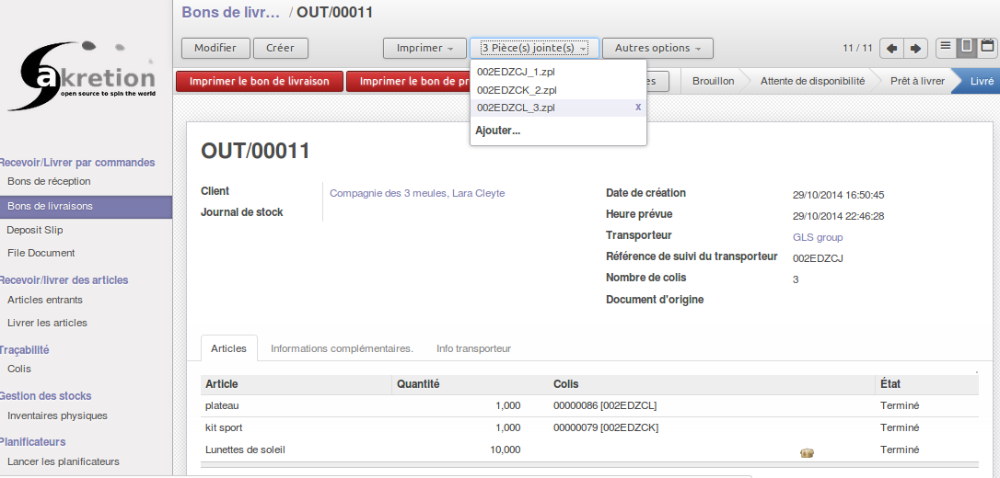
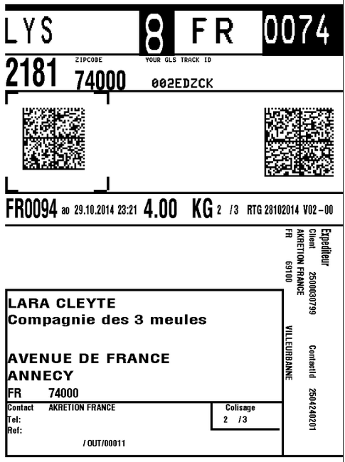

<section class="oe_container oe_website_only">

<div class="oe_row oe_more_spaced">
    <h3 class="oe_slogan">GLS Services Integration with Odoo</h3>
    <h3 class="oe_slogan"><a href="http://odoo-community.org/">An OCA module</a> : validated by Odoo community experts</h3>
    <h4 class="oe_slogan"><a href="http://www.akretion.com/fr">By Akretion</a></h4>
<div class="oe_span6">

<h2>Unibox service implementation</h2>
<p>Features:</p>
<ul>
    <li>Send delivery order informations and parcel infothe GLS unibox server</li>
    <li>Webservice routing info in back</li>
    <li>Label GLS Unibox generated</li>
</ul>

<table>
    <tr><td><h3>Odoo Delivery Order avec GLS carrier</h3><div class="oe_row_img oe_centered"></div><br/><br/></td></tr>
    <tr><td><h3>GLS transport label towards France generated with Odoo ERP</h3><div class="oe_row_img oe_centered"></div><br/><br/></td></tr>
    <tr><td><h3>Account GLS settings by company</h3><div class="oe_row_img oe_centered"></div><br/><br/></td></tr>
    <tr><td><h3>Account GLS settings by company</h3><div class="oe_row_img oe_centered"></div><br/><br/></td></tr>
</table>


<h2>TODO</h2>
    <ul>
        <li>Shop Delivery Service</li>
        <li>delivery Express Parcel Guaranteed (for companies only)</li>
        <li>migrate the module in 8 version</li>
    </ul>
    <br/>

    <div class="oe_row oe_centeralign oe_more_space">
        <a href="http://www.akretion.com/contact" class="oe_button oe_big">Contact us</a><br>
        <a href="https://github.com/OCA/carrier-delivery/tree/7.0/delivery_carrier_label_gls" class="oe_button oe_big">Access to the code</a>
    </div>


</section>
